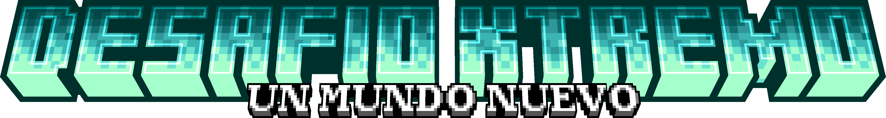

Tres biomas · Ni uno más
Elige bien
Nieve, bosque y desierto. Cada uno tiene sus ventajas y sus problemas, y una mala ubicación puede arruinar todo tu desarrollo.
Sigue bajando para recorrer la isla
Evento de Minecraft por equipos · Temporada 2

Despiertas solo, en algún punto de una isla, sin nada. Tu clan está ahí fuera. Todo lo demás tendrás que ganártelo.
El concepto
No es Minecraft con mecánicas extra. Es un juego totalmente distinto, dentro de Minecraft: sin bloques vanilla, sin minería, sin mesa de crafteo. Una isla nueva, construida desde cero, donde cada recurso cuesta y cada decisión pesa.
Recursos
Aquí no se mina ni se rompen bloques. Talas, picas y recolectas nodos repartidos por el mapa, y lo que sacas depende de la herramienta que lleves.
Los nodos y árboles reaparecen cada uno o dos días. Pulsa un nodo para recolectar.
Fabricación
Abre el menú de fabricación en tu propio inventario. Si llevas los materiales, eliges el objeto y en unos segundos lo tienes.
La primera se levanta con 20 de madera y 5 de metal. Cada mesa desbloquea objetos nuevos en tu menú.
Reúne 5 fragmentos de plano básico y 50 de metal, teniendo ya una mesa de nivel 1.
5 fragmentos de plano avanzado y 100 de metal. Aquí empiezan las herramientas épicas.
Biomas y temperatura
Tres biomas · Ni uno más
Nieve, bosque y desierto. Cada uno tiene sus ventajas y sus problemas, y una mala ubicación puede arruinar todo tu desarrollo.
Sigue bajando para recorrer la isla
Norte · Frío
Madera y piedra de sobra, pero casi nada de metal y apenas animales. Comer y avanzar rápido se complica.
Centro · Templado
Ni frío ni calor. Un reparto equilibrado de madera, piedra y metal: el sitio más cómodo para empezar.
Sur · Calor
Lleno de metal y vacío de piedra y madera. Puedes avanzar muy rápido… si aguantas el calor.
Muerte
Se acabó esperar a que alguien te reviva. Al morir esperas un tiempo y vuelves a jugar. Cuantas más veces mueras en el día, más larga la espera.
Colócalos como puntos de aparición y elige en cuál reaparecer. Sin ninguno, apareces en un lugar aleatorio de la isla.
¿No puedes esperar? Tu equipo puede revivirte antes con ella.
Al empezar tienes 3 muertes sin espera, válidas durante tus primeras 4 horas de juego.
Clanes
Cada jugador despierta en un punto aleatorio, lejos de sus compañeros. Recorre la isla, reúnete con ellos y forma un clan desde el propio inventario.
Máximo 4 por clan, para que ningún grupo desequilibre el servidor.
Eventos
Las ruletas vuelven con otro papel: cada color tiene su efecto, siempre temporal. Algunas llegan sin avisar, así que juegas a la hora que quieras.
De jugadores para jugadores
Hasta ahora, vivir un evento así estaba reservado a unos pocos creadores invitados. Aquí la inscripción está abierta a cualquier jugador, y transmitir es completamente opcional.
Mapa, reglas y sistemas pensados para esta temporada. Serás de los primeros en pisar la isla.
Todo lo que ves en el juego está hecho a medida por el equipo: mecánicas, interfaz, texturas y sonidos.
No hace falta tener canal ni seguidores. Si quieres jugar, tienes sitio. Si quieres emitirlo, también.
El diseño del juego sigue en desarrollo: nombres y valores pueden cambiar antes del lanzamiento.
Novedades
El equipo
Las personas que organizan, moderan y programan Desafio Xtremo.
Todavía sin fecha
Únete al Discord para enterarte antes que nadie de cuándo abren las inscripciones y de cada novedad del desarrollo.